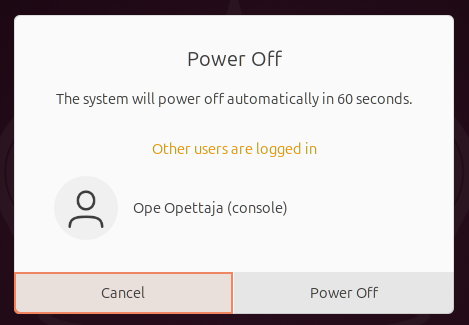
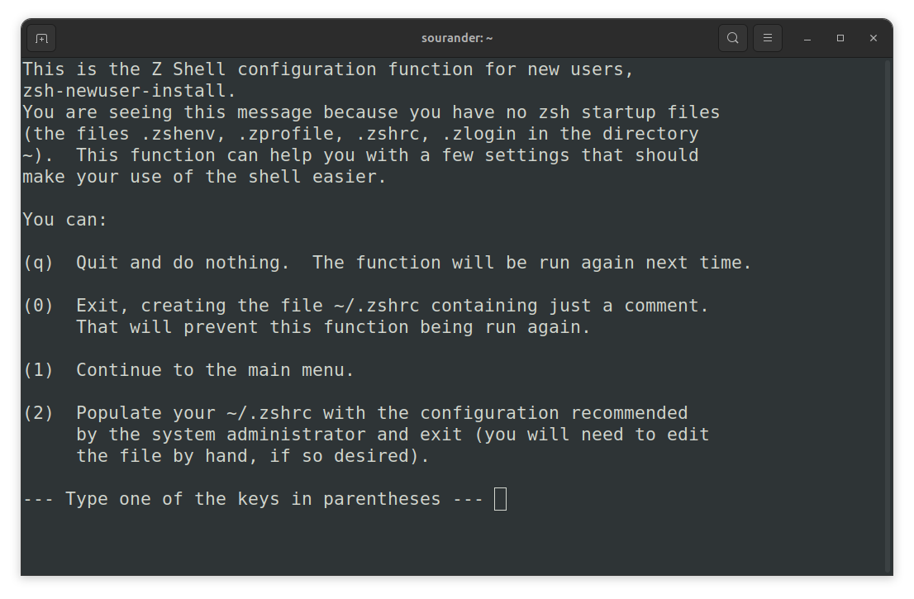

Terminaali
Terminologiaa
Linuxia voi käyttää usealla eri käyttöliittymällä. Termistö tulee yllättävänkin kaukaa historiasta, lue koko tarina täältä: A Guide to the Terminal, Console, and Shell (thevaluable.dev). Alla sama aihe lyhyemmin suomeksi.
Kaukokirjoitin (eng. teleprinter), suurimpana valmistaja teletype (=> tty), oli fyysinen laite, joka koostui näppäimistöstä ja tulostimesta, ja joka lähetti viestin vastaanottajalle esimerkiksi puhelinlankoja pitkin. Viesti tulostettiin paperille. Näitä käytettiin jo 1800-luvun lopulla. Myöhemmin, tietokoneiden aikakaudella eli 1900-luvun puolivälin tienoilla, kaukokirjoittimia (muista: tty) käytettiin lähettämään viestejä keskustietokoneisiin (eng. mainframe).
1960-luvulla tulostaminen korvattiin näytöillä, ja näin syntyi videoterminaali, josta käytettiin myös termiä console tai lyhyesti terminal.
1970-luvulla kaukokirjoittimella tai terminaalilla pystyi lähettämään viestejä UNIX-käyttöjärjestelmään. Lähetetyt viestit kirjoitettiin /dev/tty0 (tai tty1 - tty63) tiedostoon. Jokaista lähettäjää varten oli oma, juoksevalla numerolla numeroitu tiedosto. Tämä tiedosto toimi rajapintana UNIX:n pään ohjelmille, jotka pystyivät käsittelemään tätä tiedostoa (tai laitetta) tavallisella ASCII-merkistöllä.
Ohjelma, joka tulkitsee /dev/tty:n sisältöä, on shell. Alunperin tämä oli UNIX-järjestelmissä Bourne shell, mutta avoimen lähdekoodin GNU/Linuxissa se on yleisimmin Bash (Bourne-again shell). UNIX-tyylisissä järjestelmissä komentirivipohjainen shell on jossain määrin myös ohjelmointikieli, ja se toteuttaa tietyt built-in ohjelmat kuten cd, break, continue, exec ja kill, kuten GNU Bashin oma dokumentaatio kertoo. Kotitietokoneet alkoivat yleistyä, ja kotitietokoneen kanssa fyysisesti erillinen konsoli eli terminaali ei ole tarpeen, joten se emuloitiin (terminal emulator). Näistä emuloiduista terminaaleista käytetään yhä termiä TTY device. Komentoja tulkkaava shell, kuten bash, lukee tämän virtuaalisen konsolin syötettä /dev/tty-tiedostosta.
| Termi | Määritelmä |
|---|---|
| Shell | Ohjelma, joka toimii ihmiselle käyttöliittymänä. Mikäli käytät GNOME 3 -työpöytäympäristöä, sinun shell on GNOME Shell. Mikäli kirjaudut Linuxiin ilman graafista shelliä, sinun shell on todennäköisimmin GNU Bash. |
| Komentotulkki | Englanniksi command language interpreter tai command-line interface, lyhenteeltään CLI. GNU Bash on sekä shell että CLI. |
| Graafinen käyttöliittymä | Englanniksi graphical user interface, lyhenteeltään GUI. GNOME Shell on sekä shell että GUI. |
| Terminaali | Terminaali on kone - tai yleisemmin virtuaaliterminaali eli ohjelma - jossa shell ajetaan. Konsoli on käytännössä sama asia. |
| Pseudoterminaali | Ohjelma, jota käyttäjä ajaa graafisessa käyttöliittymässä, ja joka emuloi terminaalia. Käytät pseudoterminaalia, kun olet graafisessa käyttöliittymässä ja etsit jostakin kuvakkeen "Terminal". |
Eri sortin terminaaleja
Virtuaaliterminaalit
Et todennäköisesti ole kirjautunut suoraan virtuaaliterminaaliin Bashillä juuri nyt. Mikäli olisit, sinulla ei olisi graafista työpöytäympäristöä vaan Bash aivan koko ruudun leveydeltään. Tällöin voisit tarkistaa tty-komennolla, mikä on käyttämäsi virtuaaliterminaalin numero.
Pseudoterminaalit
Olet mitä todennäköisemmin GNOME-työpöydällä, joka on siis johonkin tty#:ään kiinnittynyt GNOME Shell. Sinun varsinainen shell on siis graafinen käyttöliittymä. Jos avaat Terminal-sovelluksen, eli gnome-terminal, aukeaa pseudoterminaali, joka emuloi terminaalia. Tässä tapauksessa tty-komennon tuloste voi olla pettymyksellinen.
Virtuaaliterminaaliin ja takaisin
Oletetaan, että olet GNOME-työpöydässä. Haluat käydä virtuaaliympäristössä - ja mielellään löytää vielä takaisinkin. Vaihtoehtoja on kaksi:
- Käytä pikanäppäintä Ctrl+Alt+F4. (tai jokin muu F-näppäin)
- Käytä komentoa
chvt.
Ennen kuin teet kumpaakaan, tarkista, mitä sessioneita on jo olemassa:
Tässä esimerkissä on vain yksi sessio, joka on aktiivinen - ja näinhän on oletettavaa, jos minä olen ainut koneeseen kirjautunut henkilö. Kyseinen sessio (2) on kiinnitetty tty2:een ja on aktiivinen. Kyseisessä virtuaaliterminaalissa on kiinnittyneenä siis nykyinen GNOME Shell työpöytineen. Kokeillaan vaihtaa johonkin toiseen virtuaaliterminaaliin; tällöin terminaalissa käynnistyy käyttäjän vakioshell eli yleensä Bash. Käytä vaihtamiseen harkintasi mukaan joko pikanäppäinyhdistelmää tai chvt-komentoa. Luethan ensin man chvt-ohjeet. Ohjeista pääset pois painamalla q-näppäintä.
$ sudo chvt 4 # tai paina ctrl+alt+f4
# HOX! Tässä välissä ruutu muuttuu mustaksi ja sinulle näkyy kirjautumisnäyttö.
# Kirjoita käyttäjätunnus ja sitten salasana.
# Sitten:
$ tty # Tarkista, olisiko tämä kenties /dev/tty4
$ loginctl # Tarkista, onko uusi sessio listalla
Pääset takaisin alkuperäiseen istuntoon joko Ctrl+Alt+F2 tai chvt 2-komennolla, olettaen, että tty:n numero on 2 kuten minun esimerkissäni. Jos vaihdat johonkin toiseen, luot uusia istuntoja. Huomaa, että jos yrität jatkossa sammuttaa tietokoneen, niin Ubuntu varoittaa, että muita käyttäjiä on järjestelmään kirjautuneena:

Kuvio 1. Varoitus Other users are logged in ilmaantuu, jos yrität sammuttaa tietokoneen.
Tip
Voit sulkea sessioita loginctl-komennolla. Esimerkiksi loginctl terminate-session 3 sulkee session 3. Ja kuten ehkä arvaat, voit tarkistaa loginctl-komennolla sarakkeesta SESSION, mikä on minkäkin sessionin ID.
Bashin peruskäyttö
Tunnistaminen
Huomaa, että käyttämäsi shell voi olla jokin muu kuin Bash. Voit selvittää yleensä jollain seuraavista komennoista. Komennon käyttö on simppeliä: kirjoita se ja paina Enter.
$ echo $0
bash
$ echo $SHELL
/bin/bash
$ cat /etc/passwd | grep opettaja # Korvaa omalla käyttäjänimellä
opettaja:x:1000:1000:Ope Opettaja,,,:/home/opettaja:/bin/bash
Bashin käyttöohjeen löydät joko distribuution sivuilta Ubuntu Manpage: bash - GNU Bourne-Again SHell tai komennolla:
- Komento
manavaa ohjeet pitkiä tekstitiedostoja sivuttavassa ohjelmassa nimeltäänpager. Lue ohjeet ohjelman tulosteen eli ruudun alalaidasta.
Näppärät pikanäppäimet
Alla olevat pikanäppäimet toimivat tyypillisesti Bash:ssä ja sitä vastaavissa shelleissä.
| Klikattavat näppäimet | Toiminto |
|---|---|
| Ctrl+L | Tyhjentää ruudun. Sama kuin komento clear. |
| Tab | Automaattinen täydennys. Tunnistaa sekä kansion tiedostoja että PATH:ssa olevia ohjelmia. |
| Tab+Tab | Tuplaklikkaus. Automaattinen täydennys, joka näyttää useammat vaihtoehdot. |
| Ctrl+U | Poistaa kaikki merkit kirjaisimesta vasemmalle. Näppärä tapa tyhjentää rivi plöröstä. |
| Up Down |
Historian kelaaminen. Voit plärät vanhoja komentoja. |
| Ctrl+Left Ctrl+Right |
Sanojen hyppiminen vasemmalle ja oikealle. Myös Alt+B ja Alt+F tekevät saman. |
Vaarallisemmat pikanäppäimet
| Pikanäppäin | Toiminto |
|---|---|
| Ctrl+D | Virallisesti EOF. Sillä pääsee esimerkiksi cat-sovelluksesta ulos, mutta bash:ssä käytettynä se on sama kuin kirjoittaisi exit. |
| Ctrl+C | Interrupt-signaali (SIGINT). Lopettaa ohjelman, millä voi pyrkiä tappamaan jumiin jääneen sovelluksen. |
| Ctrl+Z | Pysäyttää sovelluksen ja siirtää sen taka-alalle. Ohjelman toistoa voi jatkaa komennolla fg. Vaihtoehtoisesti sen voi käydä myöhemmin tappamassa kill-komennolla, mikäli se oli jumissa, eikä siitä pääse eroon yllä olevalla SIGINT:llä. |
Tehtävät
Tehtävä: tty
- Aja komento
ttyonnistuneesti pseudoterminaalissa. - Aja komento
ttyonnistuneesti virtuaaliterminaalissa.
Tätä varten sinun tarvitsee joko käyttää Ctrl+Alt+F3 -tyylisiä näppäinkomentoja tai chvt-komentoa. Dokumentoi prosessi ja selitä omin sanoinesi (mutta lähteiden avulla), mitä oikeastaan teit.
Tehtävä: Z-Shellin asennus
Ubuntu 24.04:ssä saat Zsh:n näin asennetuksi:
Tämän jälkeen voit käynnistää Z-shellin. Ensimmäisellä ajokerralla käynnistyy konfiguraatio-ohjelma, joka näkyy kuvassa alla. Käynnistä Z-Shell se komennolla zsh.

Kuvio 1: *Ohjelma zsh-newuser-install luo sinulle käynnistystiedostot. Valitse 0 eli tyhjä konfiguraatio.
Tip
Huomaa, että Zsh ei käynnistyessään ajaa .bashrc-tiedostoa. Jos sinulla on yhä "Hello, world!" -tuloste kyseisessä tiedostossa, et näe sitä tässä shellissä.
Tip
Huomaa, että Zsh ei ole sinun vakioshell. Tämän voit todentaa komennolla grep $USER /etc/passwd. Opit myöhemmin tällä kurssilla, miten vaihdat vakioshellisi.